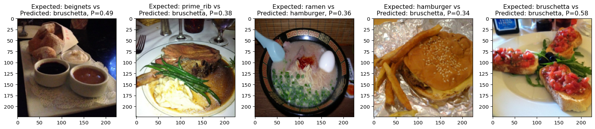

Fine-tuning the model
In this section, we fine-tune our model with our sample (5 classes) of the Food-101 dataset [1].
Context
Load packages
# to have a progress bar during training
import tqdm
# to visualize evolution of loss and sample data
import matplotlib.pyplot as pltTraining and evaluation functions
bar_format = "{desc}[{n_fmt}/{total_fmt}]{postfix} [{elapsed}<{remaining}]"
def train_one_epoch(epoch):
model.train()
with tqdm.tqdm(
desc=f"[train] epoch: {epoch}/{num_epochs}, ",
total=total_steps,
bar_format=bar_format,
leave=True,
) as pbar:
for batch in train_loader:
loss = train_step(model, optimizer, batch)
train_metrics_history["train_loss"].append(loss.item())
pbar.set_postfix({"loss": loss.item()})
pbar.update(1)
def evaluate_model(epoch):
model.eval()
eval_metrics.reset()
for val_batch in val_loader:
eval_step(model, val_batch, eval_metrics)
for metric, value in eval_metrics.compute().items():
eval_metrics_history[f'val_{metric}'].append(value)
print(f"[val] epoch: {epoch + 1}/{num_epochs}")
print(f"- total loss: {eval_metrics_history['val_loss'][-1]:0.4f}")
print(f"- Accuracy: {eval_metrics_history['val_accuracy'][-1]:0.4f}")Train the model
%%time
for epoch in range(num_epochs):
train_one_epoch(epoch)
evaluate_model(epoch)[train] epoch: 0/3, [0/117] [00:00<?]2025-04-17 00:58:36.743239: W external/xla/xla/hlo/transforms/simplifiers/hlo_rematerialization.cc:3021] Can't reduce memory use below 2.76GiB (2965721457 bytes) by rematerialization; only reduced to 6.53GiB (7015960796 bytes), down from 6.93GiB (7442595936 bytes) originally
2025-04-17 00:58:54.600087: W external/xla/xla/tsl/framework/bfc_allocator.cc:501] Allocator (GPU_0_bfc) ran out of memory trying to allocate 5.85GiB (rounded to 6279808768)requested by op
2025-04-17 00:58:54.604063: W external/xla/xla/tsl/framework/bfc_allocator.cc:512] **************************************************************************************______________
E0417 00:58:54.604605 15287 pjrt_stream_executor_client.cc:3045] Execution of replica 0 failed: RESOURCE_EXHAUSTED: Out of memory while trying to allocate 6279808552 bytes. [tf-allocator-allocation-error='']
[train] epoch: 0/3, [0/117] [00:35<?]--------------------------------------------------------------------------- XlaRuntimeError Traceback (most recent call last) File <timed exec>:2 Cell In[13], line 12, in train_one_epoch(epoch) 5 with tqdm.tqdm( 6 desc=f"[train] epoch: {epoch}/{num_epochs}, ", 7 total=total_steps, 8 bar_format=bar_format, 9 leave=True, 10 ) as pbar: 11 for batch in train_loader: ---> 12 loss = train_step(model, optimizer, batch) 13 train_metrics_history["train_loss"].append(loss.item()) 14 pbar.set_postfix({"loss": loss.item()}) File ~/parvus/prog/mint/ai/jxai/.venv/lib/python3.12/site-packages/flax/nnx/graph.py:1081, in UpdateContextManager.__call__.<locals>.update_context_manager_wrapper(*args, **kwargs) 1078 @functools.wraps(f) 1079 def update_context_manager_wrapper(*args, **kwargs): 1080 with self: -> 1081 return f(*args, **kwargs) File ~/parvus/prog/mint/ai/jxai/.venv/lib/python3.12/site-packages/flax/nnx/transforms/compilation.py:345, in jit.<locals>.jit_wrapper(*args, **kwargs) 335 @functools.wraps(fun) 336 @graph.update_context('jit') 337 def jit_wrapper(*args, **kwargs): 338 pure_args, pure_kwargs = extract.to_tree( 339 (args, kwargs), 340 prefix=(in_shardings, kwarg_shardings), (...) 343 ctxtag='jit', 344 ) --> 345 pure_args_out, pure_kwargs_out, pure_out = jitted_fn( 346 *pure_args, **pure_kwargs 347 ) 348 _args_out, _kwargs_out, out = extract.from_tree( 349 (pure_args_out, pure_kwargs_out, pure_out), ctxtag='jit' 350 ) 351 return out [... skipping hidden 5 frame] File ~/parvus/prog/mint/ai/jxai/.venv/lib/python3.12/site-packages/jax/_src/interpreters/pxla.py:1298, in ExecuteReplicated.__call__(self, *args) 1296 self._handle_token_bufs(result_token_bufs, sharded_runtime_token) 1297 else: -> 1298 results = self.xla_executable.execute_sharded(input_bufs) 1300 if dispatch.needs_check_special(): 1301 out_arrays = results.disassemble_into_single_device_arrays() XlaRuntimeError: RESOURCE_EXHAUSTED: Out of memory while trying to allocate 6279808552 bytes.
OOM issues
As you can see, I ran out of memory when running this code on my machine.
Out of memory (OOM) problems are common when trying to train a model with JAX on GPUs. See for instance this question on Stack Overflow and this issue in the JAX repo.
According to the JAX documentation on GPU memory allocation, you can try the following:
import os
os.environ['XLA_PYTHON_CLIENT_PREALLOCATE'] = 'false'
os.environ['XLA_PYTHON_CLIENT_ALLOCATOR'] = 'platform'
os.environ['XLA_PYTHON_CLIENT_MEM_FRACTION'] = '0.5'or, if you use IPython (or Jupyter which runs IPython), you can use the equivalent syntax using the IPython built-in magic command to set environment variables %env:
%env XLA_PYTHON_CLIENT_PREALLOCATE=false
%env XLA_PYTHON_CLIENT_ALLOCATOR=platform
%env XLA_PYTHON_CLIENT_MEM_FRACTION=0.5None of these solutions worked for me neither on my machine nor on Cedar and I am starting to suspect that there is a problem with this particular version of jaxlib.
Without GPUs (so on our training cluster), training will be much longer, but you won’t run into this problem.
Metrics graphs
If we hadn’t run out of memory, we could graph our metrics.
Evolution of the loss during training:
plt.plot(train_metrics_history["train_loss"], label="Loss value during the training")
plt.legend()Loss and accuracy on the validation set:
fig, axs = plt.subplots(1, 2, figsize=(10, 10))
axs[0].set_title("Loss value on validation set")
axs[0].plot(eval_metrics_history["val_loss"])
axs[1].set_title("Accuracy on validation set")
axs[1].plot(eval_metrics_history["val_accuracy"])Check sample data
And we could look at the model predictions for 5 items:
test_indices = [1, 250, 500, 750, 1000]
test_images = jnp.array([val_dataset[i]["image"] for i in test_indices])
expected_labels = [val_dataset[i]["label"] for i in test_indices]
model.eval()
preds = model(test_images)num_samples = len(test_indices)
names_map = train_dataset.features["label"].names
probas = nnx.softmax(preds, axis=1)
pred_labels = probas.argmax(axis=1)
fig, axs = plt.subplots(1, num_samples, figsize=(20, 10))
for i in range(num_samples):
img, expected_label = test_images[i], expected_labels[i]
pred_label = pred_labels[i].item()
proba = probas[i, pred_label].item()
if img.dtype in (np.float32, ):
img = ((img - img.min()) / (img.max() - img.min()) * 255.0).astype(np.uint8)
expected_label_str = names_map[inv_labels_mapping[expected_label]]
pred_label_str = names_map[inv_labels_mapping[pred_label]]
axs[i].set_title(f"Expected: {expected_label_str} vs \nPredicted: {pred_label_str}, P={proba:.2f}")
axs[i].imshow(img)
References
1.
Bossard L, Guillaumin M, Van Gool L (2014) Food-101 – mining discriminative components with random forests. In: European conference on computer vision